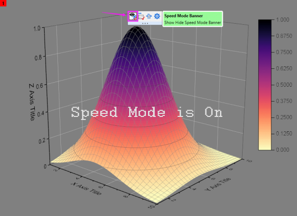

FAQ-1133 Wie verberge ich den Banner des Entwurfsmodus'?
hide-speed-mode-banner
Letztes Update: 07.06.2022
Um den Banner des Entwurfsmodus ein-/auszuschalten, klicken Sie auf den Rand der Seite, um die Minisymbolleiste auf Seitenebene zu öffnen, und klicken Sie auf das Symbol Banner für Entwurfsmodus.
 |
Es gibt eine globale Einstellung auf der Registerkarte Diagramm des Dialogs Einstellungen|Optionen, um den Banner des Entwurfsmodus' auszuschalten. Diese Einstellung ist auch in den Versionen vor 2022b verfügbar. Beachten Sie, dass die Schaltfläche Banner für Entwurfsmodus nicht auf der Minisymbolleiste gezeigt wird, wenn das Kästchen Optionen deaktiviert ist.
|

Siehe auch:
Origin-Version mind. erforderlich: 2022b SR0
Schlüsselwörter:Entwurfsmodus, Wasserzeichen deaktivieren